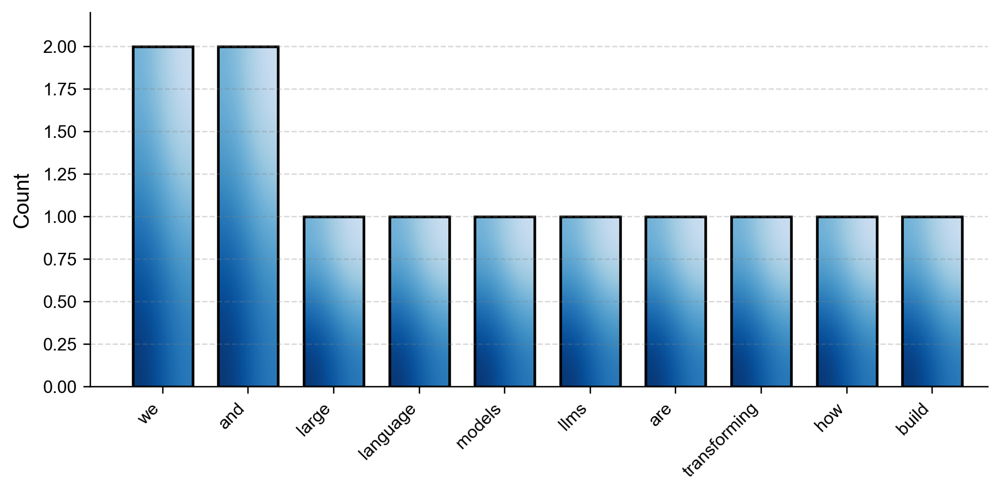

Remark
These lecture notes are in early access and will continue to evolve based on classroom experience and feedback.
1.1. What is Natural Language Processing?#
1.1.1. Learning Objectives#
By the end of this section, you should be able to:
Define Natural Language Processing (NLP) and explain what it means to treat language as data.
Describe different granularities of linguistic data (characters, tokens, sentences, documents, corpora).
Give examples of core NLP tasks and map them to their inputs and outputs.
Explain the standard NLP pipeline and how large language models (LLMs) change—but do not eliminate—it.
Select and set up the appropriate Python NLP toolkit (NLTK or spaCy) for a given task.
Run and interpret minimal NLP workflows in Python that perform basic preprocessing and simple analysis.
Section Goal
This section establishes the conceptual foundation for the entire course. You will learn what NLP is, how language is structured as data across multiple levels of granularity, what kinds of problems NLP addresses, and how to set up the Python tools you will use throughout the book. By the end, you will have a clear mental model of the NLP pipeline and a working Python environment with spaCy and NLTK.
1.1.2. Language as Data#
Natural Language Processing (NLP) is the field at the intersection of linguistics, computer science, and machine learning that studies how computers can process, understand, and generate human language. The word natural distinguishes human languages (English, Arabic, Mandarin, etc.) from formal languages designed for computers (Python, SQL, etc.).
In this course we treat language as data: sequences of symbols that can be counted, modeled statistically, and fed into neural networks. This framing is powerful—but it comes with a caveat. Unlike a spreadsheet of numbers, language is deeply ambiguous, variable, and context-dependent:
“I saw the man with the telescope.” — Who had the telescope?
“The bank was steep.” — A riverbank or a financial institution?
“Can you pass the salt?” — A question about ability, or a polite request?
Resolving these ambiguities requires not just the words in front of you but grammar, world knowledge, and communicative intent. That is what makes NLP both challenging and fascinating.
Key Term — Corpus
A corpus (plural: corpora) is a collection of text (or speech) used to train or evaluate NLP models. Examples include news archives, scientific papers, legal documents, tweets, or code repositories. The composition of your corpus determines what your model learns; choosing it carefully is one of the most important decisions in any NLP project.
1.1.2.1. Why Is NLP Hard?#
Being explicit about the core challenges helps you understand why each technique in this course exists.
Challenge |
Description |
Example |
|---|---|---|
Ambiguity |
Words and sentences have multiple valid interpretations |
“She saw the man with the telescope” |
Variability |
The same meaning can be expressed many ways |
“It rained” vs. “There was precipitation” |
Context-dependence |
Meaning depends on surrounding text and situation |
Pronouns (he, she, it) require knowing what they refer to |
World knowledge |
Understanding often needs background facts not in the text |
“The trophy didn’t fit because it was too big” — what was too big? |
Noise and error |
Real text has typos, slang, abbreviations, code-switching |
Social media posts, clinical notes, OCR output |
Scale |
Language data is vast; models need efficient training and inference |
GPT-3 was trained on ~570 GB of compressed text |
Each row above maps to a family of NLP methods. As you progress through the course, keep returning to this table and ask: which challenge does this technique address?
1.1.2.2. Motivating Applications#
NLP appears throughout modern computing and data science. A few representative applications:
Search and information retrieval — ranking documents by relevance to a query, answering natural language questions over large collections.
Conversational agents — chatbots, virtual assistants, and customer-support bots that understand and generate dialogue.
Document understanding — contract analysis, scientific literature mining, legal and policy analysis: extracting structured facts from unstructured text.
Social media and opinion mining — sentiment analysis, stance detection, toxicity detection.
Code and technical text — code completion, documentation generation, bug localization, log analysis.
Healthcare and biomedicine — clinical note summarization, drug–drug interaction extraction, radiology report generation.
Many examples in this book draw from environmental monitoring, public health, and water resources, where text data from scientific articles, policy documents, and reports plays a central role in evidence-based decision making.
1.1.3. Granularity of Language Data#
We can view and process language at multiple levels of granularity. Choosing the right level is one of the first modeling decisions you will make.
Level |
Description |
When it matters |
|---|---|---|
Characters |
Individual letters, digits, punctuation |
Noisy text, misspellings, morphologically rich languages |
Tokens |
Word-like units (or subword pieces) |
Almost every NLP task — tokenization is universal |
Sentences |
Basic units of meaning and syntax |
Classification, translation, summarization |
Documents |
Full articles, reports, or conversations |
Topic modeling, long-form summarization |
Corpora |
Collections of documents |
Training models, evaluating systems, studying language |
What Is a Token? What Is a Subword?
A token is the basic unit a model operates on. For classical models, tokens are words. For modern neural models (including LLMs), they are subword pieces produced by algorithms such as Byte-Pair Encoding (BPE) or WordPiece.
For example, the word “unhappiness” might be split into ["un", "happiness"] or ["un", "happy", "##ness"]. This lets the model handle words it never saw during training by composing them from familiar pieces. We study subword tokenization in detail in Section 1.3; for now, just note that “token” ≠ “word”.
Understanding which level matters for your task is part of designing an effective NLP workflow.
=== Characters (first 30) ===
['L', 'a', 'r', 'g', 'e', ' ', 'l', 'a', 'n', 'g', 'u', 'a', 'g', 'e', ' ', 'm', 'o', 'd', 'e', 'l', 's', ' ', '(', 'L', 'L', 'M', 's', ')', ' ', 'a']
=== Tokens ===
['Large', 'language', 'models', '(', 'LLMs', ')', 'are', 'transforming', 'NLP', '.', 'They', 'are', 'trained', 'on', 'massive', 'corpora', '.', 'Their', 'applications', 'range', 'from', 'translation', 'to', 'code', 'generation', '.']
=== Sentences ===
1. Large language models (LLMs) are transforming NLP.
2. They are trained on massive corpora.
3. Their applications range from translation to code generation.
=== Corpus: 3 documents ===
Doc 1: Large language models (LLMs) are transforming NLP....
Doc 2: Another document goes here.
Doc 3: And a third one.
Notice how the same text looks completely different depending on which level of analysis you choose. Each level exposes different patterns:
Characters reveal spelling, punctuation style, and morphological cues.
Tokens reveal vocabulary and word-level statistics.
Sentences reveal structure and discourse flow.
Documents/Corpora reveal topic distributions and genre differences.
Choosing the wrong granularity — for example, modeling character sequences when you need sentence-level semantics — is a common source of poor model performance.
1.1.4. The NLP Pipeline#
A traditional NLP workflow can be viewed as a pipeline — a sequence of processing stages where the output of each step feeds into the next. Understanding this pipeline gives you a mental map for the entire course.
Data acquisition — Collect raw text from the web, APIs, document repositories, or digitized scans. (Section 1.2)
Preprocessing and normalization — Clean and standardize the text: lowercasing, removing markup, tokenization, sentence segmentation. (Section 1.3)
Linguistic analysis — Add structure: part-of-speech tags, syntactic parses, named entities. (Section 1.4)
Modeling — Train or apply models for classification, tagging, generation, or retrieval.
Evaluation — Measure performance with appropriate metrics and human review. (Section 1.5)
How LLMs Reshape the Pipeline
Large language models (LLMs) do not eliminate the pipeline — they reorganize it.
Before LLMs: each task needed a custom model with hand-engineered features.
With LLMs: one pretrained model handles many tasks via prompting or light fine-tuning.
The bottleneck shifts upstream (data quality, prompt design, corpus curation) and downstream (evaluation, safety, deployment). Stages 1, 2, and 5 become more important, not less.
1.1.4.1. Pipeline in Action#
To make the pipeline concrete, imagine building a system that classifies news headlines as environment-related or not:
Stage |
What we do |
|---|---|
Data acquisition |
Scrape 500 headlines from an environmental news site and a general news site |
Preprocessing |
Lowercase, remove punctuation, tokenize; drop duplicates |
Linguistic analysis |
Tag POS to confirm content words dominate environmental headlines (flood, emission, drought) |
Modeling |
Train logistic regression on TF–IDF features; compare with a few-shot LLM prompt |
Evaluation |
Report accuracy, precision, recall, F1 on a held-out test set; inspect errors |
This five-step loop is what you will replicate — with increasing sophistication — in every project in this course.
1.1.5. A Taxonomy of Core NLP Tasks#
NLP tasks can be organized by their input/output structure and whether the goal is understanding (extracting information) or generation (producing text).
Task |
Typical Input |
Typical Output |
Example use case |
|---|---|---|---|
Text classification |
Document or sentence |
Category label |
Spam detection, sentiment analysis |
Sequence labeling |
Token sequence |
Label per token |
POS tagging, named entity recognition |
Question answering |
Question + context |
Text span or free-form answer |
Reading comprehension, customer support |
Machine translation |
Source sentence |
Target sentence |
Cross-lingual communication |
Summarization |
Document or document set |
Shorter summary |
News or scientific article summarization |
Language modeling |
Prefix (token sequence) |
Probability over next token(s) |
Autocomplete, text generation |
Natural language inference |
Sentence pair |
Entailment / contradiction / neutral |
Textual reasoning |
Dialogue |
Conversation history |
Next response |
Chatbots, virtual assistants |
Information extraction |
Document |
Structured facts (entities, relations) |
Knowledge base construction |
Understanding vs. Generation
Tasks split into two broad families:
Discriminative (understanding): the model maps input → label or structured output. Evaluation is straightforward — compare predicted label to the gold label. Examples: classification, NER, NLI.
Generative: the model produces free-form text. Evaluation is harder because many valid outputs exist. Examples: translation, summarization, dialogue, language modeling.
This distinction matters for choosing evaluation metrics, which we cover in Section 1.5.
1.1.5.1. Mapping Tasks to Real Examples#
Concrete input–output pairs make the taxonomy tangible:
Text classification — sentiment analysis:
Input: "The new water treatment facility has dramatically improved water quality."
Output: positive
Sequence labeling — named entity recognition:
Input: "The EPA published its 2024 report in Washington, D.C."
Output: [EPA → ORG, 2024 → DATE, Washington, D.C. → GPE]
Summarization:
Input: A 2-page climate assessment report
Output: "Sea levels are projected to rise 0.5 m by 2100 due to accelerating ice melt."
Question answering:
Context: "The IPCC was established in 1988."
Question: "When was the IPCC established?"
Output: "1988"
Information extraction — relation extraction:
Input: "Amazon acquired Whole Foods for $13.7 billion in 2017."
Output: (Amazon, acquired, Whole Foods) + {price: $13.7B, year: 2017}
Notice that classification and QA require very different output structures even though both operate on text — which is why the choice of model and evaluation metric depends heavily on the task.
1.1.6. Python Tooling for NLP#
Two libraries dominate classical NLP workflows in Python: NLTK [Bird et al., 2009] and spaCy [Honnibal et al., 2020].
Dimension |
NLTK |
spaCy |
|---|---|---|
Philosophy |
Modular, educational |
Integrated, production-ready |
Speed |
Slower (Python-native) |
Faster (Cython-optimized) |
Ease of use |
More manual wiring |
Single pipeline call |
Best for |
Learning, research, classical NLP |
Production systems, large corpora |
POS tagging |
Separate |
Built into |
Lemmatization |
Requires WordNet + POS |
Built into |
For most work in this course you will use spaCy as the primary tool. NLTK appears when we need finer control or access to its large collection of corpora and lexical resources (e.g., WordNet).
Other Libraries You Will Encounter
Hugging Face
transformers— the standard library for pretrained language models (BERT, GPT, LLaMA, etc.). Used extensively from Chapter 2 onward.scikit-learn— classical ML models (logistic regression, SVM) and feature extraction (TF–IDF vectorization).pandas— data manipulation for text datasets stored in CSV, JSON, or similar formats.matplotlib/seaborn— visualization of model outputs, token distributions, and evaluation metrics.requests/BeautifulSoup— web data acquisition, covered in Section 1.2.
Quick Setup
Run the following once to install required libraries and download model data. If you are using Google Colab, prepend ! to pip and shell commands.
# Install libraries
pip install nltk spacy requests beautifulsoup4
# Download an English spaCy model (run from your terminal)
python -m spacy download en_core_web_sm
# Download common NLTK datasets (run inside Python)
import nltk
nltk.download("punkt")
nltk.download("punkt_tab")
nltk.download("averaged_perceptron_tagger_eng")
nltk.download("stopwords")
nltk.download("wordnet")
en_core_web_sm is a small English pipeline (tokenizer + POS tagger + dependency parser + NER). Larger models (en_core_web_md, en_core_web_lg, en_core_web_trf) offer better accuracy at the cost of size and speed. We start small for efficiency.
1.1.7. A First NLP Example: Word Frequency Analysis#
The following example illustrates a minimal text preprocessing pipeline. We will:
Normalize the text — lowercase and strip non-alphabetic characters.
Tokenize — split into word-like units.
Count — compute word frequencies.
Visualize — plot the most frequent words.
These four steps appear in almost every NLP project in some form.
[('we', 2), ('and', 2), ('large', 1), ('language', 1), ('models', 1), ('llms', 1), ('are', 1), ('transforming', 1), ('how', 1), ('build', 1)]
{kind=link}

Fig. 1.1 Word Frequency Distribution: This bar chart displays the top 10 most frequent tokens extracted from the NLP introductory text after normalization and tokenization. It highlights the dominance of high-frequency stop words like “we” and “and” before filtering.#
This simple pipeline already raises important questions:
Tokenization: should “LLMs” be one token or three characters? Different tokenizers give different answers.
Normalization: should we lowercase acronyms like “EPA” or “WHO”? Doing so loses information.
Stop words: common words like “we”, “to”, “the” dominate the frequency list but carry little topic signal. Should we remove them?
What Are Stop Words?
Stop words are high-frequency, low-information words: the, a, is, in, of, to, etc. Many pipelines filter them before computing features because they would otherwise dominate word counts without adding useful signal.
However, stop words are not always useless. For authorship attribution or syntactic analysis, function words are highly informative. Always ask: does removing stop words help or hurt for my specific task?
Representation: when should we go beyond raw counts toward richer representations such as TF–IDF or dense embeddings? (Chapters 2–3)
1.1.8. A Second Example: Running an NLP Pipeline with spaCy#
The word-frequency example treated text as a bag of tokens. spaCy [Honnibal et al., 2020] lets us go further: in a single call it assigns each token a part-of-speech tag, a dependency relation, a lemma, and a stop-word flag.
Before running the code, it helps to know what each output column means:
Column |
What it means |
|---|---|
|
Surface form of the word as it appears in the text |
|
Part-of-speech: grammatical category (noun, verb, adjective, …) |
|
Dependency relation: syntactic role relative to the head word |
|
Base form: summarizes → summarize, reports → report |
|
Whether the token is in spaCy’s stop-word list |
|
The word this token grammatically depends on |
Token POS Dep Lemma IsStop Head
----------------------------------------------------------------------
The DET det the True model
large ADJ amod large False model
language NOUN compound language False model
model NOUN nsubj model False summarizes
summarizes VERB ROOT summarize False summarizes
environmental ADJ amod environmental False reports
reports NOUN dobj report False summarizes
accurately ADV advmod accurately False summarizes
. PUNCT punct . False summarizes
Common Part-of-Speech Tags (Universal Dependencies)
spaCy uses the Universal Dependencies tagset for its coarse pos_ attribute:
Tag |
Category |
Examples |
|---|---|---|
|
Noun |
model, report, city |
|
Verb |
summarizes, run, is |
|
Adjective |
large, environmental, new |
|
Adverb |
accurately, quickly, not |
|
Determiner |
the, a, this |
|
Adposition (preposition) |
in, on, of, for |
|
Proper noun |
EPA, London, Python |
|
Punctuation |
. , ? |
What to observe in the output above:
Tokenization, POS tagging, dependency parsing, lemmatization, and stop-word detection all come from a single
nlp(text)call — no extra steps needed.The
dep_column reveals grammatical structure:nsubj= nominal subject,dobj= direct object,amod= adjectival modifier. This is useful for information extraction (finding who did what to whom).Lemmas reduce vocabulary size: treating summarizes, summarized, and summarization as variants of summarize improves search and classification.
These annotations give interpretable features for classical models and useful diagnostics for LLM-based pipelines.
1.1.8.1. Dependency Parsing: Seeing Sentence Structure#
The dep_ column encodes a dependency parse — a tree that shows how words relate to each other grammatically. Every word (except the root verb) has exactly one head word it depends on.
For the sentence “The large language model summarizes environmental reports accurately.”, the parse looks roughly like:
summarizes ← root
├── model ← nsubj (nominal subject: what does the summarizing?)
│ ├── The ← det
│ ├── large ← amod
│ └── language ← compound
├── reports ← dobj (direct object: what is summarized?)
│ └── environmental ← amod
└── accurately ← advmod (how?)
You do not need to memorize dependency labels now. The key insight is that this tree structure lets programs answer questions like “what is the subject of this verb?” or “what noun is this adjective modifying?” — which powers information extraction, question answering, and grammar checking.
1.1.8.2. Visualizing Named Entities#
Named Entity Recognition (NER) is the task of identifying and classifying real-world entities mentioned in text — people, organizations, locations, dates, quantities.
spaCy’s displacy module renders these annotations directly in the notebook:
Common entity types in en_core_web_sm:
Label |
Description |
Example |
|---|---|---|
|
People, fictional or real |
Elon Musk |
|
Companies, agencies, institutions |
SpaceX, EPA |
|
Countries, cities, states |
California, France |
|
Non-GPE locations |
Cape Canaveral, the Pacific |
|
Absolute or relative dates |
2002, last year |
|
Monetary values |
$13.7 billion |
|
Objects, vehicles, etc. |
Falcon 9 |
Running displacy Outside Jupyter
Replace displacy.render(..., jupyter=True) with:
displacy.serve(doc_ner, style="ent")
This opens a local browser window. Press Ctrl+C to stop the server.
NER models are not perfect — they make mistakes, especially on domain-specific vocabulary. Error analysis is covered in Section 1.5.
1.1.9. From Classical NLP to Large Language Models#
Understanding where LLMs came from helps you appreciate both their power and their limitations.
1.1.9.1. Era 1 — Rule-Based Systems (1950s–1980s)#
Early NLP systems used hand-crafted rules: regular expressions, context-free grammars, expert-defined dictionaries. They could work well in narrow domains but were brittle — a rule that works on news text often fails on social media.
1.1.9.2. Era 2 — Statistical NLP (1990s–2000s)#
The field shifted to statistical models that learned patterns from data. Key methods:
n-gram language models — estimate the probability of a word given the previous n−1 words.
Hidden Markov Models (HMMs) — used for POS tagging and speech recognition.
Logistic regression / SVMs — text classification with manually engineered features (e.g., TF–IDF bag-of-words).
These models required substantial feature engineering: domain experts manually designed representations to feed into the models.
1.1.9.3. Era 3 — Neural NLP and Embeddings (2013–2017)#
Neural networks shifted the focus toward learning features automatically:
Word embeddings (Word2Vec, GloVe) — dense vector representations where semantically similar words have similar vectors.
Recurrent Neural Networks (RNNs) / LSTMs — model sequences by maintaining a hidden state updated at each time step.
Attention mechanisms — allow models to focus on the most relevant parts of the input when producing each output token (2015).
1.1.9.4. Era 4 — Transformers and LLMs (2017–present)#
The Transformer architecture [Vaswani et al., 2017] replaced recurrence with self-attention, letting every token directly attend to every other token. This enabled much more parallelizable training and massive scaling.
Pretrained models (BERT, GPT, T5) fine-tuned on downstream tasks achieved state-of-the-art results across nearly every benchmark. Subsequent generations (GPT-3/4, LLaMA, Claude, Gemini) scale further, exhibiting emergent capabilities: few-shot learning, instruction following, and chain-of-thought reasoning — often with no task-specific training at all.
1.1.9.5. What Is a Language Model?#
A language model assigns a probability to sequences of text. More precisely, it estimates the probability of the next token given all preceding tokens:
Training on a large corpus teaches the model the statistical regularities of language — grammar, facts, style, reasoning patterns — encoded implicitly in its weights. When we talk about running an LLM, we are repeatedly sampling from this distribution (or taking its highest-probability output) to generate text one token at a time.
Implication for the Pipeline
Because an LLM has already “seen” massive amounts of text, it arrives with broad linguistic and factual knowledge baked in. Fine-tuning or prompting it on your task is much cheaper than training a task-specific model from scratch. But the model’s knowledge is frozen at its training cutoff, and it can reflect biases present in the training corpus — which is why evaluation (Section 1.5) remains critical.
Key Takeaways
Language is data — text can be analyzed at multiple levels (characters, tokens, sentences, documents, corpora); the right level depends on the task.
NLP is hard because language is ambiguous, variable, context-dependent, and noisy. These challenges motivate the full range of techniques covered in this course.
The NLP pipeline has five stages: data acquisition → preprocessing → linguistic analysis → modeling → evaluation. LLMs reorganize the pipeline but do not eliminate any stage.
Core NLP tasks include classification, sequence labeling, QA, summarization, and generation. Most can be addressed with LLMs via prompting, but classical models remain useful and interpretable.
Discriminative tasks (classification, NER) produce labels; generative tasks (translation, summarization) produce text. This distinction matters for evaluation.
NLTK is best for learning and rapid prototyping; spaCy is preferred for production pipelines — faster and with tokenization, POS, parsing, and NER in one call.
Stop words, lemmatization, POS tags, and dependency relations are fundamental concepts that reappear throughout the course.
LLMs are language models — they assign probabilities to token sequences and generate text by sampling from those distributions.
1.1.10. Exercises and Discussion#
Corpus brainstorming
Pick a domain you care about (e.g., public health, climate policy, finance, software engineering). Describe a corpus you would like to build for that domain. What documents would you include? At what granularity (sentences, paragraphs, full documents) would you model the data? What biases might your collection choices introduce?Task mapping
For the same domain, propose at least three NLP tasks (e.g., classification, extraction, summarization). For each task, specify: (a) the input format, (b) the desired output, and (c) one potential evaluation metric. Note whether each task is discriminative or generative.Pipeline reflection
Consider a system you use every day (e.g., a search engine, email spam filter, or chatbot). Sketch what you think its NLP pipeline might look like from data acquisition to evaluation. Where do you think LLMs are used, and where might classical components still be in place?Toolkit exploration (Python)
Run the spaCy example on two sentences of your own choosing from a domain you care about. Inspect the POS tags, dependency relations, and lemmas. Are there surprising or incorrect annotations? How might annotation errors affect a downstream task?Stop word experiment (Python)
Modify the word-frequency example to filter stop words using NLTK’s stop-word list (nltk.corpus.stopwords.words("english")). Compare the top-10 most frequent words before and after filtering. What changes? Are there words you would add to or remove from the stop-word list for your domain?Ambiguity hunt
Find three sentences from any news source that contain at least one of the following: lexical ambiguity (a word with multiple senses), structural ambiguity (multiple parse trees), or pronoun ambiguity. For each sentence, write out the two possible interpretations and explain what context a human uses to pick the right one.